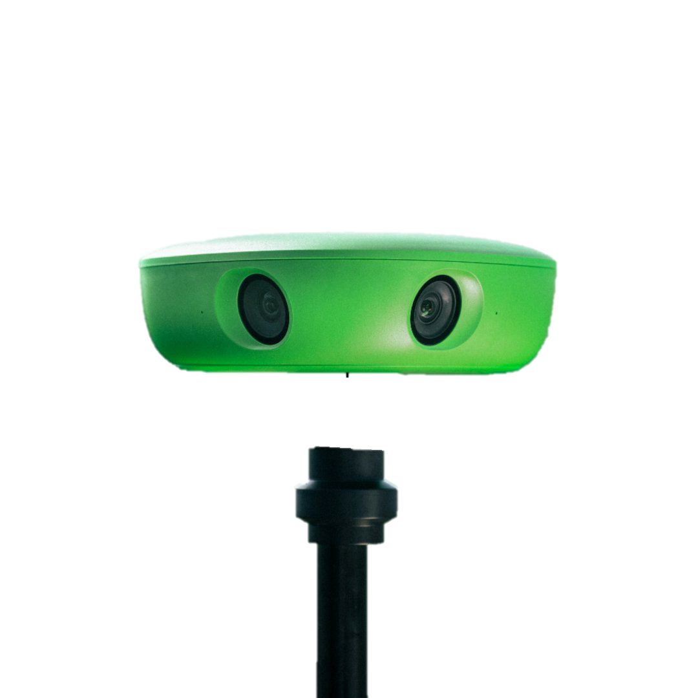
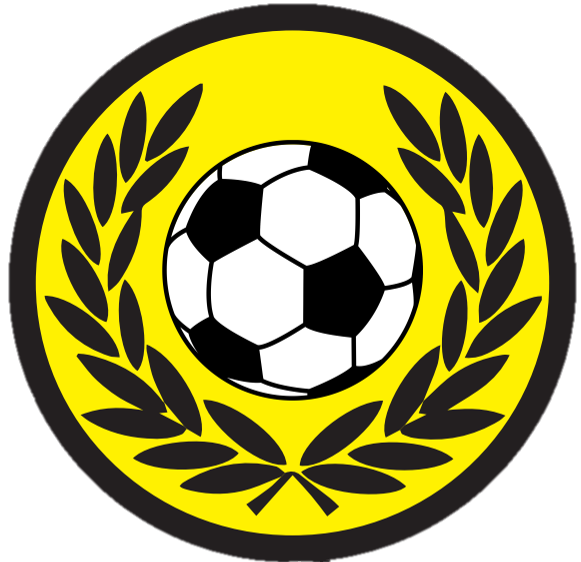

HeinäCup 2026
Talkooinfo
Mikä on HeinäCup?
HeinäCup on yksi Suomen suurimmista juniorijalkapalloturnaukista. Vuonna 2026 turnauksessa pelaa 340 joukkuetta eri puolilta Suomea ja ulkomailta. Pelit pelataan 15 kentällä Jyväskylässä ja Laukaassa viikonloppuna 26.–28.6.2026.
Ikäluokat kattavat vuosikertoja 2011–2019, ja sarjat on jaettu tasoihin (Elite, Kilpa, Haaste, Harraste). Turnauksen järjestää Palokan Riento.
Miksi vanhempien kannattaa tehdä talkootöitä?
Joukkueemme saa 8 € jokaista talkootuntia kohden – rahat tulevat suoraan joukkueen kassaan ja kattavat esimerkiksi turnausmaksuja, leirejä ja varustehankintoja.
Talkootyö on käytännöllistä: kenttätehtävät ovat selkeitä, vuorot ovat lyhyitä ja pääset samalla seuraamaan turnauksen tunnelmaa läheltä.
📋 Ilmoittautuminen vuoroihin tapahtuu erikseen – linkki jaetaan WhatsApp-ryhmässä.
What is HeinäCup?
HeinäCup is one of Finland's largest youth football tournaments. In 2026, 340 teams from across Finland and abroad will compete. Matches are played on 15 fields in Jyväskylä and Laukaa over the weekend of 26–28 June 2026.
Age groups range from 2011 to 2019, with divisions by level (Elite, Competitive, Challenge, Recreational). The tournament is organised by Palokan Riento.
Why should parents volunteer?
Our team earns €8 for every hour volunteered – the money goes directly into the team fund and covers things like tournament fees, training camps, and equipment.
Volunteering is straightforward: field tasks are clearly defined, shifts are short, and you get to experience the tournament atmosphere up close.
📋 Sign-up for shifts is handled separately – the link will be shared in the WhatsApp group.
Materiaalit / Materials
Kenttäkartta – Kuokkala / Field Map
Kuokkalan kenttä · Pohjanlahdentie 7, 40520 Jyväskylä


